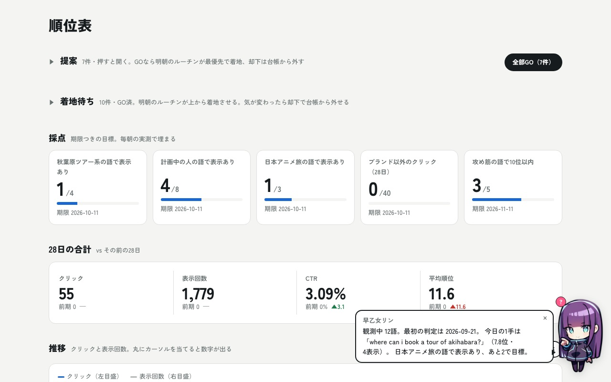
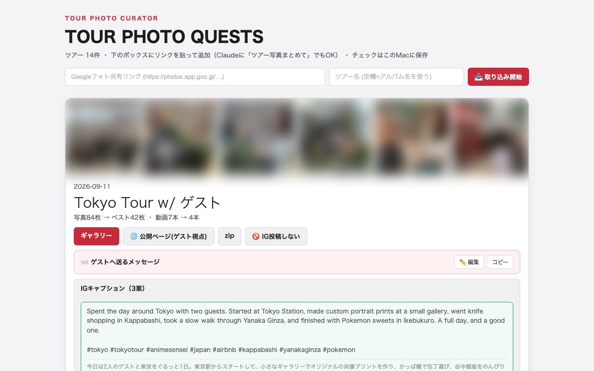
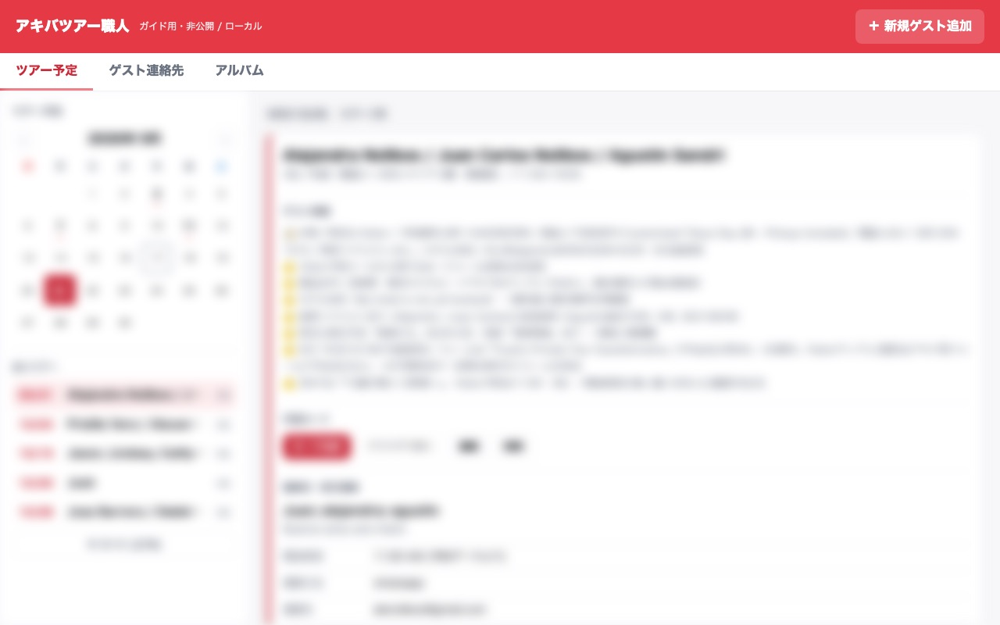

ラジオで「使い回せるものはリンクにして概要欄に載せます」と言ったやつです。秋葉原でアニメツアーをやっているユウキの現場で、実際に毎日動いているものだけを並べました。番組で話した6本だけです。
まず「できあがるもの」を見てください。各ツールに実物の画面かリンクを付けました。自分の商売に置き換えられそうなものだけ、下の頼み方をコピーすれば十分です。
コピーは全文を。途中のURLも一緒に貼ってください。使うサービスを名指ししてある部分で、AIが勝手に別の作り方を選ぶのを防いでいます。
プログラミングの知識は要りません。ここに書いてあるのは全部「こういうことをしてほしい」という日本語の相談だけです。作る前に「今の自分の環境だと何が必要になる？」と聞くと、足りないものから教えてくれます。
自分のツアーサイトが検索でどう見られているかを毎朝しらべて、直すところを提案して、そのまま直して公開までやってくれます。人間がやるのは提案に「GO」を押すことだけです。

触れる見本 → 順位表を開く
直され続けている実物のサイト → animesenseijp.com
提案に「GO」を押す。効かなかった施策を台帳から外す。
複数の予約サイトで同じツアーを売っていると、片方で予約が入ったときにもう片方を閉じ忘れて事故ります。それを見張って、ぶつかる時だけ知らせてくれます。
出来上がるのはあなた専用のカレンダーとスマホ通知なので、公開できる実物がありません。届くのはこういう形です。
触れる見本 → 見張りの画面を開く
ぶつからない日は何も届きません。ここが肝心で、毎回通知が来る作りにすると見なくなります。
鳴った時だけ判断する。何もない日は何もしない。
ツアー中に撮った何百枚の写真から、使える写真だけを機械的に選びます。ゲストに渡すページと、お礼のメッセージまで一緒に出てきます。写真は自分のパソコンの中だけで処理していて、外部のAIには送っていません。

触れる見本 → 選別の画面を開く
ギャラリーのリンクをゲストに送る。
選んだ写真から10枚組の投稿を作り、文章とハッシュタグまで用意して、「これで出していいですか」とスマホに聞いてきます。OKすると投稿されます。
AIが最初に書いた文と、却下して直させた後の文の比べ → ビフォーアフター
触れる見本 → 組み立ての画面を開く
写真と文章の最終確認。ここで「この言い回しはクサい」と却下していくと、だんだん好みを覚えます。
「東京で何か面白いことしたい」みたいなふわっとした問い合わせに、写真と地図つきの提案ページで返せるようになります。返信が早くて分かりやすいだけで、ゲストの反応が変わります。

触れる見本 → 叩き台の画面を開く
叩き台を見て、ゲストに返事を書く。ゲストへの送信はAIにさせない。
AIに仕事をさせるほど料金や上限が気になります。週に1回、何にどれだけ使ったかと、無駄になっている部分を報告させています。番組で話した「暴走コスト防衛」の自分版です。
自分のパソコンで開くだけのページなので公開していません。中身はこの形です。
触れる見本 → レポートの見本を開く
やる案の番号を返すだけ。そこから先は実行までやってくれる。
番組でも話しましたが、最初の指示はふわっとしたままで大丈夫です。実際にこのSEO担当を作ったときの一言目は「自分が作ったサイトをちゃんと検索されてるのか知りたいから、定期的にこういうものが見れるダッシュボードを作ってほしい」だけでした。専門用語も設計図も要りません。AIの方が詳しいので、足りないところは向こうから聞いてきます。
うまくいかない時は、できあがったものを見ながら「ここはこうじゃなくて、こう」と言い直してください。何度かやりとりすると、だんだん自分の好みを覚えていきます。